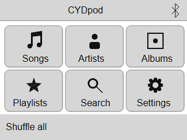
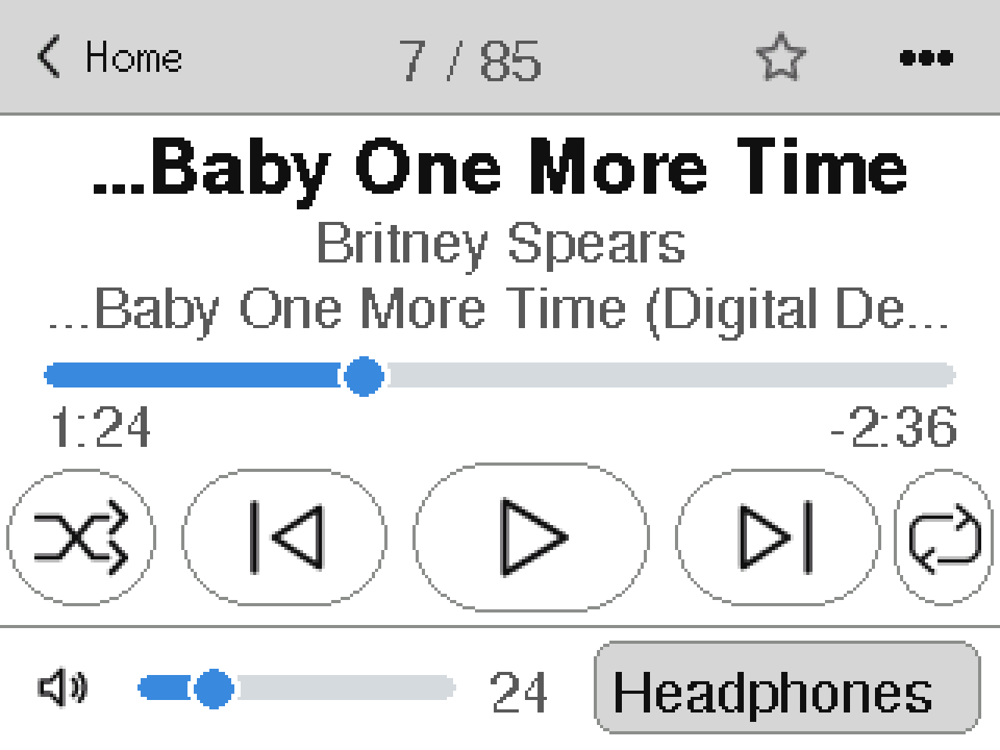
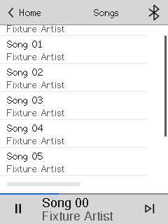
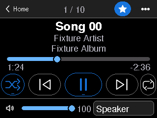
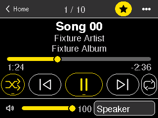
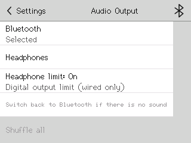

An iPod-style music player for the JC2432W328C “Cheap Yellow Display”. Artist, Album and Song from a microSD card, out to a Bluetooth speaker or a wired output. Open firmware you flash from your browser.
10,000 tracks is the tested library size (host tests); the first scan on the board has not been timed yet.
CYDpod turns a very cheap ESP32 touchscreen board into a pocket music player. It reads your music from a microSD card, builds a catalogue, and shows it the way the classic iPod did: Artist, Album, Song. Sound goes to a Bluetooth speaker or headphones, or out of a wired output you add. There is no cloud service and no account; the firmware uses Wi-Fi only for its optional upload page.

Home

Now Playing

Songs, portrait
Simulator renders from the project’s test harness (layout only; the board’s own font and colours may differ), not photos of a device.
What you need
Four required items, and a few optional ones. Nothing here is an affiliate link; search for the exact model name.
REQUIRED
A JC2432W328C board
The 2.4″ ESP32 “Cheap Yellow Display” with capacitive touch (ST7789 panel, CST820 touch controller), 4 MB flash and a microSD slot. The model name is printed on the back.
Other CYD variants are not supported, including the resistive-touch ESP32-2432S028R. The firmware and the flash file are built for this board only.
REQUIRED
A microSD card
FAT32, 32 GB or smaller (the tested configuration). Put your music in /music (sub-folders are fine) and optional playlists in /playlists.
The player keeps its catalogue cache in a hidden /.sys folder on the card. Flashing never touches the card.
REQUIRED
A USB data cable and a computer with Chrome or Edge
Flashing from the browser uses Web Serial, which Chrome and Edge support on Windows, macOS, Linux and ChromeOS. Firefox and Safari do not. Use a cable that carries data; some charge-only cables do not.
REQUIRED
Somewhere for the sound to go
Bluetooth: any speaker or headphones. Pair from Settings › Bluetooth › Pair new. Tested with a speaker on earlier builds; AirPods Pro 2 are not verified (an early test build did not pair with them).
Wired: an I2S DAC board on the board’s P6 connector (silkscreen top to bottom: GND, IO16, IO4, IO17: bit clock, data, word select), plus a headphone amplifier if you want headphones; a PCM5102A-class line DAC is the documented example. wired audio not yet verified on hardware
OPTIONAL
A microSD card reader
The easiest way to copy music, and the only one that works with the one-click flash (see the Wi-Fi note under Known limits).
OPTIONAL
I2S DAC and amplifier
For the wired “Headphones” output. Skip it if Bluetooth is enough.
OPTIONAL
A phone or PC for the upload page
The firmware has a Wi-Fi upload page (hotspot or your own network). It needs a separate uploader image that the single flash file does not include.
What it can do
Every item below is in the v33 source and covered by host tests. Hardware checks that are still open are listed under Known limits.
Four formatsMP3, FLAC (16-bit), M4A (AAC-LC) and PCM WAV. Other common sample rates are resampled to 44.1 kHz. HE-AAC is not supported.
A big libraryBuilt for 10,000 tracks (host-tested). The catalogue is cached on the card and checked quickly at boot instead of re-read.
Browse the classic wayArtists, Albums, Songs, Folders and Favourites, with a Shuffle all bar on every list.
SearchOn-screen keyboard. Accents and case are folded, so “beyonce” finds Beyoncé.
M3U / M3U8 playlistsDrop them in /playlists. Playlists that were written for another folder layout still match by path tail or file name.
Now PlayingSeek bar, volume, shuffle, repeat and a favourite star. It restores your last track, paused, when it boots.
Three themesLight, Black and High Contrast, in portrait or landscape.
Phone-like scrollingDrag a list, flick it and let it coast, touch to stop, or drag the scroll thumb.
Bluetooth that behavesIf your phone takes the speaker, the player does not page it back. It is discoverable only while the Pair screen is open.
Wired headphone limitA switchable ceiling of −30 dBFS on the wired output protects ears; turning it off allows −6 dBFS, which is much louder.
Wi-Fi upload pageHotspot or home network, behind a six-digit passcode (000000 until you change it). MP3s and playlists only, and it needs the separate uploader image.

Black theme

High Contrast theme

Audio output and headphone limit
Simulator renders, not photos. They use the project’s test fixture library.
Why it’s worth building
Reasons, not adjectives.
The hardware is cheapOne small ESP32 board with a screen and a card slot. No separate DAC needed for Bluetooth.
No cloud, no accountYour files stay on your card. The firmware has no online service to sign in to.
Open firmwareThe source, the dependency pins and every third-party notice are in the repository.
Bounded memoryOne fixed 40 KB codec pool is shared by all four decoders, so playback does not depend on how big your library is.
Tested on a hostCatalogue, sorting, playlists, queue, scrolling, Bluetooth policy and output switching all have automated tests. Hardware results are labelled separately.
Flash from the browserNo toolchain: plug in, press Install, pick the port.
Flash it
One button, one file. Works in Chrome and Edge over USB.
This erases your saved settings.The one-click flash writes the whole 4 MB flash, so the saved Bluetooth speaker, volume, theme, brightness, Wi-Fi and last-track position go back to defaults and you will pair again. Your SD card is not touched. Want to keep settings? Use the four-region command below.
This browser can’t flash over USB. Open this page in Chrome or Edge on a computer.Web Serial needs a secure page (https). Open the published site rather than a local file.
v33 · JC2432W328C · 4 MB image written at offset 0 SHA256 333b5fc005416167a634adf40588b1e6a51b5a746ecf69fad36a30156b23dc3b built 2026-11-06 · flasher: ESP Web Tools 10
Plug inConnect the board to your computer with the USB cable. Leave the SD card in or out; either is fine.
Click InstallPress the yellow button above, in Chrome or Edge.
Choose the portPick the serial port that appears when you plug the board in (CP210x, CH340 or USB Serial), then confirm.
WaitLeave it until the progress bar finishes, then press RESET if the board does not restart. Do not unplug while it writes.
Board won’t enter download mode?
Hold BOOT, tap RESET, release BOOT, then press Install again and choose the port. If no port shows up at all, try another cable (it must carry data) or another USB port.
Driver or port problems
Boards of this family use a CP210x or CH340 USB-serial chip. If your computer shows no port, install the driver for the one on your board (Silicon Labs CP210x or WCH CH340), unplug and replug. Only Chrome and Edge can flash from this page.
Keep your settings: the four-region flash with esptool
Writes the bootloader, partition table, boot helper and app, and leaves the settings area alone. Install esptool 5.x (pip install esptool), download the four files from firmware/regions/ into one folder, and put the board in download mode (hold BOOT, tap RESET, release BOOT). Replace COM7 with your port (/dev/ttyUSB0 on Linux, /dev/cu.usbserial-… on macOS). Press RESET afterwards.
Copy music to /music on a FAT32 card and insert it. The first start scans the card and builds the catalogue; a large library takes a while the first time.
Open Settings › Bluetooth › Pair new to connect a speaker, or Settings › Audio Output to switch to wired Headphones.
The browser flash and this exact image have not yet been tried on a physical board by the project; the erase-settings behaviour is inferred from the flash layout. Both are on the owner checklist.
Known limits
What this build does not do yet, and what has only been tested on a computer.
Not in this build
The boot-loop fix after a crash.
Sleep-timer arming (the setting is present).
Album artwork.
Wi-Fi upload from the single flash file: it needs a separate uploader image, which the file leaves blank (“Uploader not installed”). The upload page also accepts MP3 and playlist names only.
Not yet checked on a real board
AirPods Pro 2, and wired I2S output through a DAC and amplifier.
Time to scan 10,000 tracks the first time (a model estimate is about 11 minutes, range 6 to 16; not measured) and time to boot afterwards.
Flick and scroll feel, memory headroom, battery life.
The one-click flash and the erase-settings behaviour.
Build from source
Windows with Python and PowerShell. Setup downloads pinned dependencies into the checkout; the check compiles everything and never touches a device.
CYDpod is built from third-party code. Full notices and licence texts are in vendor/NOTICES.md and vendor/notices/. The combined firmware binary is not labelled Apache or MIT: GPLv3 components and the Helix RPSL/RCSL terms apply to it, and codec patent questions are separate from this inventory.
Component
Licence
Used for
CYD-MP3-Player
Apache-2.0
Application shell the player started from
AnimatedGIF
Apache-2.0 (BitBank)
Bundled with the shell; the linker drops it
ESP32-A2DP
Apache-2.0
Bluetooth audio
arduino-libhelix, Helix MP3
GPLv3 wrapper, RealNetworks RPSL/RCSL codec
MP3 decoding
MiniAAC
MIT wrapper, Helix AAC core under GPLv3 / RPSL / RCSL
M4A and AAC-LC decoding
miniflac
0BSD
FLAC decoding
TFT_eSPI
BSD two-clause (MIT ancestry, font notices kept)
Display driver
arduino-audio-tools
GPLv3
Vendored for reference; not wired into the build
Arduino-ESP32, ESP-IDF
LGPL-2.1 and Espressif/third-party SDK notices
Platform core
CYDpod’s own licence has not been chosen yet. decision pending
Credits
CYDpod stands on other people’s work.
CYD-MP3-PlayerGarionhk’s player, the starting point for the application.
MiniAACThe minimal AAC and M4A decoder with a Helix core.
Helix MP3 and arduino-libhelixRealNetworks’ fixed-point decoder and Phil Schatzmann’s Arduino wrapper.
miniflacJohn Regan’s single-header FLAC decoder.
ESP32-A2DPPhil Schatzmann’s Bluetooth A2DP library for ESP32.
TFT_eSPIBodmer’s fast display library.
ESP Web ToolsESPHome’s browser flasher behind the Install button.
TypeSource Sans 3 and IBM Plex Mono, both under the SIL Open Font Licence.